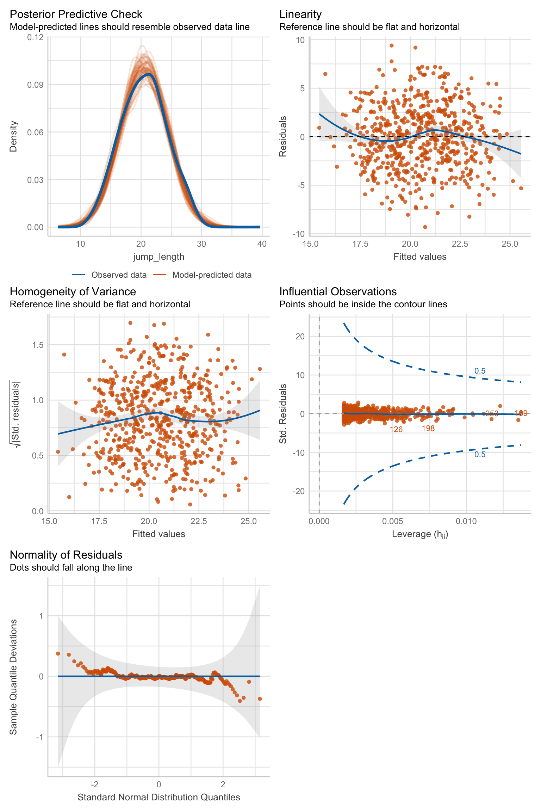

33 Maßzahlen der Modelgüte
Letzte Änderung am 07. September 2023 um 15:40:21
Wir interpretieren keine der Gütekriterien und statistischen Maßzahlen alleine sondern in der Gesamtheit. Es gibt eine Reihe von Maßzahlen für die Güte eines Modells, wir schauen uns hier einige an. Später werden wir uns noch andere Maßzahlen anschauen, wenn wir eine multiple lineare Regression rechnen. Das R Paket performance werden wir später auch nutzen um die notwendigen Gütekriterien zu erhalten.
Wir wollen eine Gerade durch Punkte legen. Deshalb müssen wir folgende Fragen klären:
- Läuft die Gerade durch die Mitte der Punkte? Hier hilft ein Residualplot für die Bewertung (siehe Kapitel 33.4).
- Liegen die Punkte alle auf der Geraden? Hier hilft das Bestimmtheitsmaß \(R^2\) weiter (siehe Kapitel 33.5)
- Folgt unser Outcome \(y\) einer Normalverteilung? Hier kann der QQ-Plot helfen (siehe Kapitel 33.6)
Achte darauf welche Lernstufe du hast und was wir wirklich in der Vorlesung gemacht haben. Hier kann sich das ein oder andere überschneiden.
Was heißt überscheiden? Wir werden uns nicht in jedem Modul alle Gütekriterien anschauen. Deshalb Augen auf deine Mitschrift.
33.1 Genutzte R Pakete für das Kapitel
Wir wollen folgende R Pakete in diesem Kapitel nutzen.
Am Ende des Kapitels findest du nochmal den gesamten R Code in einem Rutsch zum selber durchführen oder aber kopieren.
33.2 Daten
Nachdem wir uns im vorherigen Kapitel mit einem sehr kleinen Datensatz beschäftigt haben, nehmen wir einen großen Datensatz. Bleiben aber bei einem simplen Modell. Wir brauchen dafür den Datensatz flea_dog_cat_length_weight.xlsx. In einer simplen linearen Regression schauen wir uns den Zusammenhang zwischen einem \(y\) und einem \(x_1\) an. Daher wählen wir aus dem Datensatz die beiden Spalten jump_length und weight. Wir wollen nun feststellen, ob es einen Zusammenhang zwischen der Sprungweite in [cm] und dem Flohgewicht in [mg] gibt. In dem Datensatz finden wir 400 Flöhe von Hunden und Katzen.
model_tbl <- read_csv2("data/flea_dog_cat_length_weight.csv") %>%
select(animal, jump_length, weight)In der Tabelle 48.1 ist der Datensatz model_tbl nochmal dargestellt.
| animal | jump_length | weight |
|---|---|---|
| cat | 15.79 | 6.02 |
| cat | 18.33 | 5.99 |
| cat | 17.58 | 8.05 |
| cat | 14.09 | 6.71 |
| cat | 18.22 | 6.19 |
| cat | 13.49 | 8.18 |
| cat | 16.28 | 7.46 |
Im Folgenden ignorieren wir, dass die Sprungweiten und die Gewichte der Flöhe auch noch von den Hunden oder Katzen sowie dem unterschiedlichen Geschlecht der Flöhe abhängen könnten. Wir schmeißen alles in einen Pott und schauen nur auf den Zusammenhang von Sprungweite und Gewicht.
33.3 Das simple lineare Modell
Wir fitten ein simples lineares Modell mit nur einem Einflussfaktor weight auf die Sprunglänge jump_length. Wir erhalten dann das Objekt fit_1 was wir dann im Weiteren nutzen werden.
fit_1 <- lm(jump_length ~ weight, data = model_tbl)Wir nutzen jetzt dieses simple lineare Modell für die weiteren Gütekritierien.
33.4 Residualplot
sigma bezeichnet.Wir wollen mit dem Residualplot die Frage beantworten, ob die Gerade mittig durch die Punktewolke läuft. Die Residuen \(\epsilon\) sollen normalverteilt sein mit einem Mittelwert von Null \(\epsilon \sim \mathcal{N}(0, s^2_{\epsilon})\).
Wir erhalten die Residuen resid und die angepassten Werte .fitted auf der Geraden über die Funktion augment(). Die Funktion augment() gibt noch mehr Informationen wieder, aber wir wollen uns jetzt erstmal auf die Residuen konzentrieren.
resid_plot_tbl <- fit_1 %>%
augment() %>%
select(.fitted, .resid)
resid_plot_tbl %>%
head(5)# A tibble: 5 × 2
.fitted .resid
<dbl> <dbl>
1 17.9 -2.09
2 17.8 0.489
3 20.6 -3.03
4 18.8 -4.72
5 18.1 0.110Die Daten selber interessieren uns nicht einer Tabelle. Stattdessen zeichnen wir einmal den Residualplot. Bei dem Residualplot tragen wir die Werte der Residuen .resid auf die y-Achse auf und die angepassten y-Werte auf der Geraden .fitted auf die x-Achse. Wir kippen im Prinzip die gefittete Gerade so, dass die Gerade parallel zu x-Achse läuft.
ggplot(resid_plot_tbl, aes(.fitted, .resid)) +
geom_point() +
geom_hline(yintercept = 0, color = "#CC79A7") +
theme_bw()
fit_1. Die rote Linie stellt die geschätzte Gerade da. Die Punkte sollen gleichmäßig und ohne eine Struktur um die Gerade verteilt sein.In Abbildung 33.1 sehen wir den Residualplot von unseren Beispieldaten. Wir sehen, dass wir keine Struktur in der Punktewolke erkennen. Auch sind die Punkte gleichmäßig um die Gerade verteilt. Wir haben zwar einen Punkt, der sehr weit von der Gerade weg ist, das können wir aber ignorieren. Später können wir uns noch überlegen, ob wir einen Ausreißer (eng. outlier) vorliegen haben.
Kommen wir nochmal auf die Funktion augment() zurück und schauen uns einmal an, was die ganzen Spalten hier zu bedeuten haben. Dafür nutzen wir nochmal einen simpleren Datensatz in der die vierte Beobachtung mit \((4.1, 5.2)\) sehr extreme Werte im Vergleich zu den anderen drei Beobachtungen annimmt. Danach fitten wir dann wieder unser lineares Modell.
Im Folgenden sehen wir dann die Ausgabe der Funktion augment(). Dabei sind die ersten beiden Spalten noch selbsterklärend. Wir haben hier mit jump_length und weight die Werte für das Outcome \(y\) und die Einflussvariablen \(x\) dargestellt.
fit_2 %>%
augment() %>%
mutate(across(where(is.numeric), round, 2))# A tibble: 4 × 8
jump_length weight .fitted .resid .hat .sigma .cooksd .std.resid
<dbl> <dbl> <dbl> <dbl> <dbl> <dbl> <dbl> <dbl>
1 1.2 0.8 1.2 0 0.38 0.52 0 0
2 1.8 1 1.44 0.36 0.33 0.29 0.35 1.18
3 1.3 1.2 1.68 -0.38 0.3 0.26 0.32 -1.23
4 5.2 4.1 5.18 0.02 0.99 0.45 32.2 0.73Die anderen Spalten sind dann wie folgt zu lesen.
-
.fittedsind die vorhergesagten Werte auf der Geraden. Wir bezeichnen diese Werte auch die \(\hat{y}\) Werte. -
.residsind die Residuen oder auch \(\epsilon\). Daher der Abstand zwischen den beobachteten \(y\)-Werten und den \(\hat{y}\) Werten auf der Geraden. -
.hatgibt den Einfluss jeder einzelnen Beobachtung auf die endgültige Gerade wieder. Also den Hebel (eng. leverage) jeder einzelnen Beobachtung und damit wie stark eine Beobachtung an der Geraden zieht. -
.sigmabeschreibt die geschätzte \(s^2_{\epsilon}\) , wenn die entsprechende Beobachtung aus dem Modell herausgenommen wird. -
.cooksddefiniert, ob eine Beobachtung ein tendenzieller Outlier im Bezug zu den anderen Beobachtungen ist. Im Prinzip eine Standardisierung derhatSpalte. -
std.residsind die standardisierten Residuen. Dabei werden die Residuen durch die Standardabweichung der Residuen \(s_{\epsilon}\) geteilt. Die standardisierten Residuen folgen dann einer Standardnormalverteilung.
Wir können dann der Ausgabe von augment() entnehmen, dass unsere vierte Beobachtung vermutlich ein Outlier ist.
33.5 Bestimmtheitsmaß \(R^2\)
Nachdem wir nun wissen wie gut die Gerade durch die Punkte läuft, wollen wir noch bestimmen wie genau die Punkte auf der Geraden liegen. Das heißt wir wollen mit dem Bestimmtheitsmaß \(R^2\) ausdrücken wie stark die Punkte um die Gerade variieren. Wir können folgende Aussage über das Bestimmtheitsmaß \(R^2\) treffen. Die Abbildung 33.2 visualisiert nochmal den Zusammenhang.
- wenn alle Punkte auf der Geraden liegen, dann ist das Bestimmtheitsmaß \(R^2\) gleich 1.
- wenn alle Punkte sehr stark um die Gerade streuen, dann läuft das Bestimmtheitsmaß \(R^2\) gegen 0.

Da die Streuung um die Gerade auch gleichzeitig die Varianz widerspiegelt, können wir auch sagen, dass wenn alle Punkte auf der Geraden liegen, die Varianz gleich Null ist. Die Einflussvariable \(x_1\) erklärt die gesamte Varianz, die durch die Beobachtungen verursacht wurde. Damit beschreibt das Bestimmtheitsmaß \(R^2\) auch den Anteil der Varianz, der durch die lineare Regression, daher der Graden, erklärt wird. Wenn wir ein Bestimmtheitsmaß \(R^2\) von Eins haben, wird die gesamte Varianz von unserem Modell erklärt. Haben wir ein Bestimmtheitsmaß \(R^2\) von Null, wird gar keine Varianz von unserem Modell erklärt. Damit ist ein niedriges Bestimmtheitsmaß \(R^2\) schlecht.
Im Folgenden können wir uns noch einmal die Formel des Bestimmtheitsmaß \(R^2\) anschauen um etwas besser zu verstehen, wie die Zusammenhänge mathematisch sind.
\[ \mathit{R}^2 = \cfrac{\sum_{i=1}^N \left(\hat{y}_i- \bar{y}\right)^2}{\sum_{i=1}^N \left(y_i - \bar{y}\right)^2} \]
In der Abbildung 33.3 sehen wir den Zusammenhang nochmal visualisiert. Wenn die Abstände von dem Mittelwert zu den einzelnen Punkten mit \(y_i - \bar{y}\) gleich dem Abstand der Mittelwerte zu den Punkten auf der Geraden mit \(\hat{y}_i- \bar{y}\) ist, dann haben wir einen perfekten Zusammenhang.

Wir können die Funktion glance() nutzen um uns das r.squared und das adj.r.squared wiedergeben zu lassen.
fit_1 %>%
glance() %>%
select(r.squared, adj.r.squared)# A tibble: 1 × 2
r.squared adj.r.squared
<dbl> <dbl>
1 0.251 0.250adj.r.squared in der Anwendung.Wir haben wir ein \(R^2\) von \(0.31\) vorliegen. Damit erklärt unser Modell bzw. die Gerade 31% der Varianz. Das ist jetzt nicht viel, aber wundert uns auch erstmal nicht. Wir haben ja die Faktoren animal und sex ignoriert. Beide Faktoren könnten ja auch einen Teil der Varianz erklären. Dafür müssten wir aber eine multiple lineare Regression mit mehren \(x\) rechnen.
Wenn wir eine multiple Regression rechnen, dann nutzen wir das adjustierte \(R^2\) in der Anwendung. Das hat den Grund, dass das \(R^2\) automatisch ansteigt je mehr Variablen wir in das Modell nehmen. Jede neue Variable wird immer etwas erklären. Um dieses Überanpassen (eng. overfitting) zu vermeiden nutzen wir das adjustierte \(R^2\). Im Falle des adjustierte \(R^2\) wird ein Strafterm eingeführt, der das adjustierte \(R^2\) kleiner macht je mehr Einflussvariablen in das Modell aufgenommen werdenn.
33.6 QQ-Plot

Das klingt hier alles etwas wage… Ja, das stimmt. Aber wir brauchen den QQ-Plot nur ganz kurz und wir müssten sehr viel Energei investieren um den QQ-Plot zu durchdringen. Deshalb hier die wage und grobe Darstellung.
Mit dem Quantile-Quantile Plot oder kurz QQ-Plot können wir überprüfen, ob unser \(y\) aus einer Normalverteilung stammt. Oder andersherum, ob unser \(y\) approximativ normalverteilt ist. Der QQ-Plot ist ein visuelles Tool. Daher musst du immer schauen, ob dir das Ergebnis passt oder die Abweichungen zu groß sind. Es hilft dann manchmal die Daten zum Beispiel einmal zu \(log\)-Transformieren und dann die beiden QQ-Plots miteinander zu vergleichen.
Wir brauchen für einen QQ-Plot viele Beobachtungen. Das heißt, wir brauchen auf jeden Fall mehr als 20 Beobachtungen. Dann ist es auch häufig schwierig den QQ-Plot zu bewerten, wenn es viele Behandlungsgruppen oder Blöcke gibt. Am Ende haben wir dann zwar mehr als 20 Beobachtungen aber pro Kombination Behandlung und Block nur vier Wiederholungen. Und vier Wiederholungen sind zu wenig für eine sinnvolle Interpretation eines QQ-Plots.
Grob gesprochen vergleicht der QQ Plot die Quantile der vorliegenden Beobachtungen, in unserem Fall der Variablen jump_length, mir den Quantilen einer theoretischen Normalverteilung, die sich aus den Daten mit dem Mittelwert und der Standardabweichung von jump_length ergeben würden.
Wir können die Annahme der Normalverteilung recht einfach in ggplot überprüfen. Wir sehen in Abbildung 33.4 den QQ-Plot für die Variable jump_length. Die Punkte sollten alle auf einer Diagonalen liegen. Hier dargestellt durch die rote Linie. Häufig weichen die Punkte am Anfang und Ende der Spannweite der Beobachtungen etwas ab.
ggplot(model_tbl, aes(sample = jump_length)) +
stat_qq() +
stat_qq_line(color = "#CC79A7") +
labs(x = "Theoretischen Quantile der Standardnormalverteilung",
y = "Quantile der beobachteten Stichprobe") +
theme_bw()
Wir werden uns später auch noch häufig die Residuen aus den Modellen anschauen. Die Residuen müssen nach dem Fit des Modells einer Normalverteilung folgen. Wir können diese Annahme an die Residuen mit einem QQ-Plot überprüfen. In Abbildung 33.5 sehen wir die Residuen aus dem Modell fit_1 in einem QQ-Plot. Wir würden sagen, dass die Residuen approximativ normalvertelt sind. Die Punkte liegen fast alle auf der roten Diagonalen.
ggplot(resid_plot_tbl, aes(sample = .resid)) +
stat_qq() +
stat_qq_line(color = "#CC79A7") +
theme_bw() 
fit_1. Die Residuen müssen einer approximativen Normalverteilung folgen, sonst hat der Fit des Modelles nicht funktioniert.
33.7 Modellgüte mit dem R Paket performance
Abschließend möchte ich hier nochmal das R Paket performance vorstellen. Wir können mit dem Paket auch die Normalverteilungsannahme der Residuen überprüfen. Das geht ganz einfach mit der Funktion check_normality() in die wir einfach das Objekt mit dem Fit des Modells übergeben.
check_normality(fit_1)OK: residuals appear as normally distributed (p = 0.555).Wir haben auch die Möglichkeit uns einen Plot der Modellgüte anzeigen zu lassen. In Abbildung 33.6 sehen wir die Übersicht von bis zu sechs Abbildungen, die uns Informationen zu der Modellgüte liefern. Wir müssen nur den Fit unseres Modells an die Funktion check_model() übergeben.
Das Schöne an der Funktion ist, dass jeder Subplot eine Beschreibung in Englisch hat, wie der Plot auszusehen hat, wenn alles gut mit dem Modellieren funktioniert hat.
Wir kommen dann in der multiplen linearen Regression nochmal auf das Paket performance zurück. Für dieses Kapitel reicht dieser kurze Abriss.
check_model(fit_1, colors = cbbPalette[6:8])
check_model().